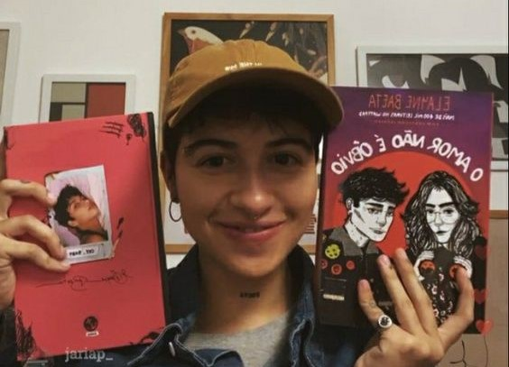

Sinopses
O amor não é óbvio: Ele está presente quando você se senta com a sua vizinha idosa para assistir a um novo capítulo da sua novela favorita. Ele é posto à prova quando você escuta as histórias mirabolantes da sua melhor amiga, ainda que nenhuma delas lhe interesse. E, às vezes, ele aparece quando você menos espera e te leva a fazer experimentos científicos munida de binóculos e uma bicicleta amarela. Íris tem 17 anos e está viciada na novela Amor em atos. Ela e sua vizinha, Dona Símia, de 68 anos, não perdem um episódio. Na escola, parece que todo mundo só pensa em duas coisas: na festa de formatura e em perder a virgindade. Só que a vida de Íris está prestes a mudar: Cadu Sena, sua paixão platônica desde a oitava série, está solteiro. Essa é a chance de Íris. Mas antes ela precisa entender o que levou a namorada de Cadu a deixá-lo por uma garota, Édra Norr. Montada em sua bicicleta, Íris vai cruzar São Patrique para descobrir tudo sobre Édra, e não vai demorar para se enredar também nos encantos da garota. A gente pode achar que sabe por quem vai se apaixonar, mas o amor não é óbvio. Nesse divertido romance a autora consegue transportar o leitor para a cabeça da protagonista Íris, é possível sentir seus medos, compartilhar seus hábitos e vibrar com suas descobertas. Com muito bom humor e uma pitada de ousadia Elayne Baeta cria O amor não é óbvio, um romance tão gostoso como passear pelas ruas de São Patrique de carona na bicicleta de Édra Norr. Uma história tocante entre duas garotas que, nessa fase turbulenta e cheia de descobertas que é a adolescência, percebem muito sobre quem elas são e sobre esse sentimento estranho, que não segue roteiros, chamado amor. Elayne baeta fez para esse livro uma musica que está publicada em seu canal do youtube
Oxe, babyHISTORIA DA ELAY E GLOBO